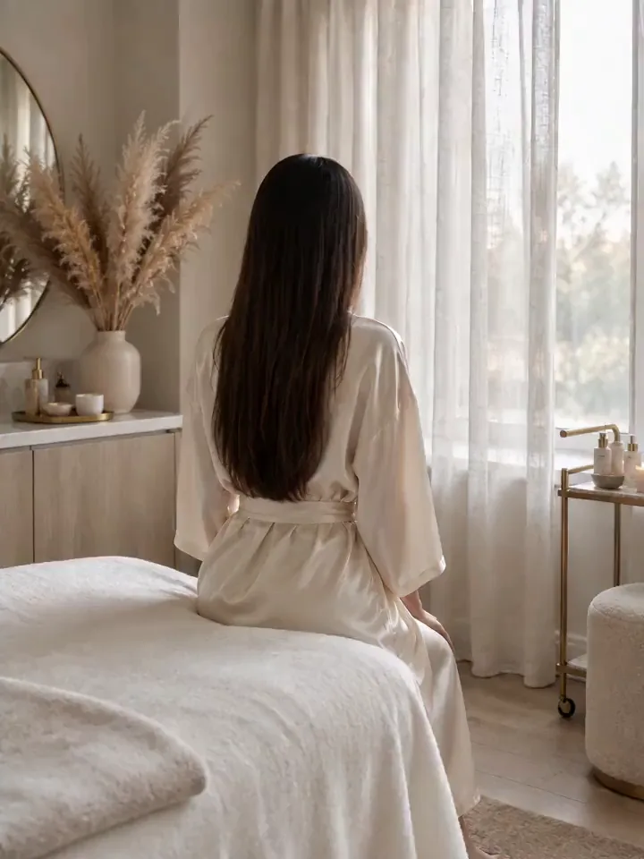
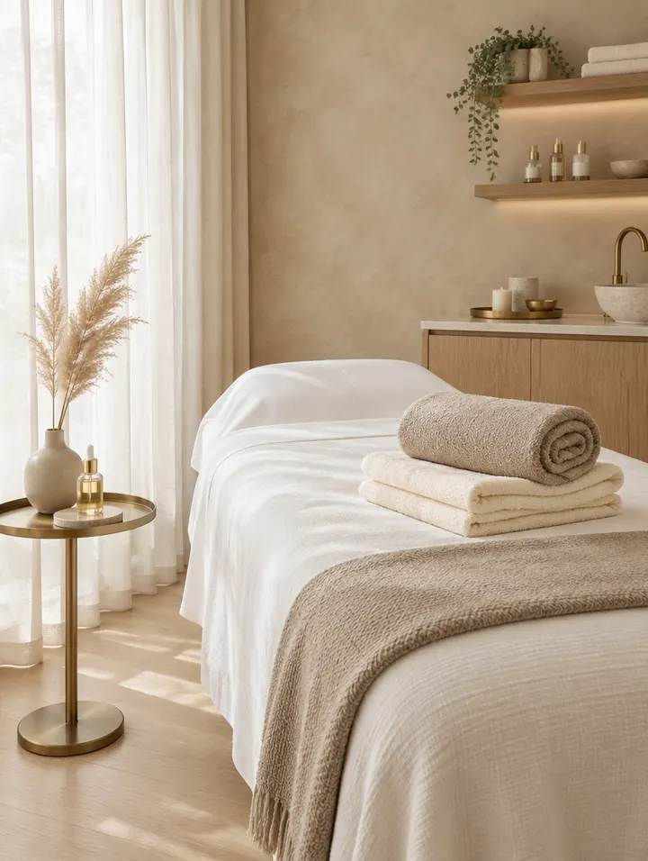

Voghera
Vicolo Rile, 527058 Voghera (PV)
- Martedì – Venerdì9:00 – 19:00
- Sabato9:00 – 14:00
- Domenica e lunedìChiuso
Voghera · Stradella
Ho smesso di vendere miracoli. Ho creato un metodo.


Il punto di partenza
Per anni Jalila si è fatta una domanda: perché, davanti allo stesso trattamento e alla stessa tecnologia, alcune persone ottengono risultati e altre no?
La risposta ha cambiato il suo modo di lavorare. Non più «quale trattamento devo fare?», ma «di cosa ha davvero bisogno questa persona?». Da qui è nata NER, la Neuro Estetica Rigenerativa: un modo di guardare l’estetica che parte dalla persona, dal suo corpo e dalle sue risposte.
I quattro pilastri del Bellessere
Le creme hanno il loro ruolo: idratano, proteggono, mantengono la pelle sana. Ma restano in superficie, mentre quello che cede si trova più in profondità. Per questo è nato un metodo.
Scegliere con criterio. Ogni tecnologia e ogni protocollo hanno un perché, e te lo spieghiamo.
Stimolare il corpo a rispondere, prima di pensare a correggere.
Resta al centro del nostro lavoro. Ma non è un corpo perfetto: è un corpo che sa stare bene con chi lo abita.
Trattamenti, movimento, alimentazione e integrazione considerati insieme, mai uno per volta.
Cosa facciamo
Estetica avanzata, epilazione laser e percorsi corpo. In comune hanno il metodo: si sceglie con criterio, ti si spiega cosa puoi aspettarti e ogni passo ha un senso.

Chi c’è dietro
Perché lo stesso trattamento può dare risultati così diversi da persona a persona?
Non solo ciò che si vede, ma ciò che il corpo sta cercando di raccontare.
NER: il progetto in cui Jalila ha messo anni di esperienza, studio, domande e passione.
Su @jalila.ilbellessere Jalila spiega NER, risponde alle domande sul laser e racconta cosa succede in istituto.
Domande frequenti
È il metodo creato da Jalila: mette in relazione trattamenti estetici, movimento, alimentazione e integrazione quando appropriata. Quattro pilastri (scienza, funzionalità, bellezza, equilibrio) considerati insieme, partendo dalla persona.
Chiamando l’istituto più comodo: Voghera al 328 236 9899, Stradella allo 0385 782980. Puoi anche scriverci in direct su Instagram.
A Voghera in Vicolo Rile 5 e a Stradella in Via G. Mazzini 18, entrambi in provincia di Pavia.
Con ZEUS Pentalaser la sensazione può essere molto diversa da quella che ti aspetti: chi l’ha appena provato l’ha descritto delicato e confortevole. La sensibilità resta personale e se ne parla in consulenza.
No. È un approccio estetico conservativo, pensato per chi vuole rimandare il più possibile medicina estetica e chirurgia. Non sostituisce il parere del medico.
Due istituti in Oltrepò
Chiama l’istituto più comodo e chiedi una consulenza NER. Prima di proporti qualcosa vogliamo sapere cosa hai provato e cosa desideri ottenere.
Preferisci scrivere? Mandaci un messaggio in direct su Instagram @jalila.ilbellessere.
Cellulare 349 112 4782
Indicazioni su Google MapsVoghera328 236 9899WhatsApp
Stradella0385 782980WhatsApp